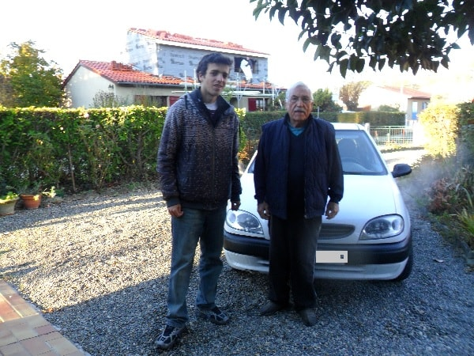
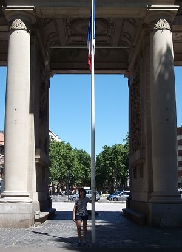
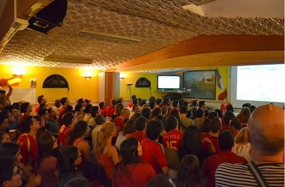
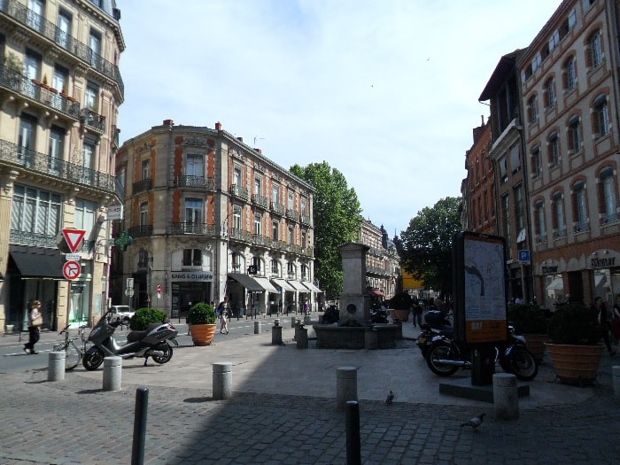

At the beginning of 2012 I land in Toulouse for find a job and get some work experience.
I would soon realize that not only titles are important. I originally chose France because my knowledge of French was a lot better than English and that he had learned it much more easily than in English.
I started french at the language school with 13 years but English one year later.
When I was getting to fourth level my spoken level was quite limited and the Spanish exams focuses on grammar and writing but at the time of the oral exams for a level they ask too much and it is not practise in class.
In fact, from the age of 18 I did not return to the language school and I left it for a moment like this where I had to learn it on the street, with reality.
Apart from that my knowledge of the language was better I count with family in France, my aunt and all my cousins and some second cousins.
I was at my aunt's house the first month she was helping me with job and house searches and with the small things.
From there I moved to a flat to do my job search to Toulouse since my aunt lives in a village 30 km from Toulouse.
I was looking at many floors but they seemed many very expensive for a room since they asked for more than 400 euros.
With that price in Spain you rent a complete apartment in my city. I found one at 300 euros, 10 minutes walk from the center of Toulouse and next to the airport.
I was living with a very cultured and open-minded Moroccan engineer with whom I learned a lot about the things of life.


In that period I was first enrolled in a very prestigious French language school, l'Alliance Française where I spent a single month in order to have the necessary level to hold a telephone conversation.
Soon I was exhausted the 2,000 euros I carried and I started working on the first thing I got shot.
While I was taking CVs, learning languages or in associations, free of charge, or at events or public centers, I dedicated myself to distributing IKEA catalogs around the city.
I was number one in the distribution of the 10 days without work experience in that field and they took me indefinite to distribute already parcels and publicity in assigned districts.
I learned a lot of driving while I had this type of work and did not waste time as I use listen to French radio.
In fact while I was there I took it quite seriously, and I was a long time without speaking Spanish, which would be completely different in my next trips.
At the end of 2012 as the situation was not good and several agents told me to wait because the summer is not the right time to find work in France.
So I decided that I would go back to Spain to go to the United Kingdom.
In this time I learned more than in a year of university, I had learned a lot in the subject of presentations, curricula, I had realized multitude of interviews in rooms, I only needed to improve my level of English..
Life in Toulouse was monotonous but fun. Apart from work and job interviews or fairs and job halls, I went out quite a bit to do sports or partying.
I used to go to language schools or to activities on the internet. And there were quite a few events organized by the town hall as River Toulouse, where there were plenty of sports on the banks of the garona.
The council lent the materials for all sports every day in summer. All this in conjunction with the people I already knew and with the meetings with my family made me spend some nice time.
In addition there are a multitude of events during the year and exhibitions, specifically in Toulouse are located near Garonne river.
There are agricultural fairs where you can buy varieties of vegetables or plants to grow.
In addition the large number of parks and green areas in the city and being surrounded by forests make the city a good place to walk..

Also it is very frequent to find Spanish people since there are many Spanish population raised in Toulouse coming from two times.
On one hand the Spanish refugees from the Spanish civil war on the Republican side and on the other hand from the time of the sixties as my uncles. Young people born with Franco looking for a place to thrive.
Here I show some photos of how the match of Spain are lived in the House of the Spanish People in Toulouse, with more emotion and feeling than in Spain if it fits.

In Toulouse there is a nice atmosphere. There are many bars and some small discos that open later around the capitoile in the town center.
Night bars are usually open from 8pm (in France most people usually dine at 7:00 a.m. to 7:00 p.m.)
The discos usually open from 12 pm. I could see although it has a culture of drinking as in Spain people are usually more moderated and drinks of graduation is
Expensive due to government taxes. Even now in a supermarket the price is more than double that here. The drink par excellence is the wine, which is quite good.
Although there are no tapas in the bars and there are usually more dishes than servings, the people are more than going out to dinner and drinking some wines. A
As I said before, most French restaurants are quite good compared to Spain and the prices in comparison with the average income of people quite better than in Spain.
At night there is also prostitution and drugs at the streets, since prostitution is not regulated as in Spain.
© 2016 - All Rights Reserved - Diseñada por Sergio López Martínez
![[Valid RSS]](https://www.feedvalidator.org/images/valid-rss-rogers.png "Validate my RSS feed")